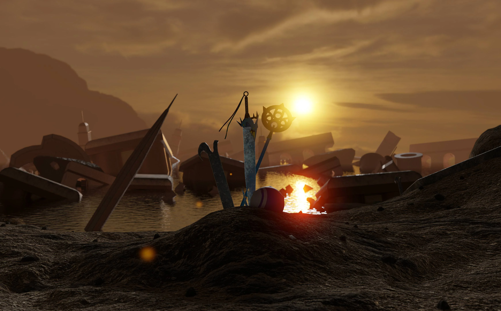

References

-
Enix, S. (n.d.). Final fantasy X/X-2 HD remaster. FINAL FANTASY X/X-2
HD Remaster. https://finalfantasyxhd.square-enix-games.com/en-us/home/
-
SQUARE ENIX CO. LTD. (2015, May 12). Final fantasy X/X-2 HD remaster.
PlayStation.
https://www.playstation.com/en-us/games/final-fantasy-x-x-2-hd-remaster/
-
Wiki, C. to F. F. (n.d.). Final fantasy X. Final Fantasy Wiki.
https://finalfantasy.fandom.com/wiki/Final_Fantasy_X
-
Wikimedia Foundation. (2023, October 31). Final fantasy X. Wikipedia.
https://en.wikipedia.org/wiki/Final_Fantasy_X
-
projects, C. to W. (2023, July 29). Final fantasy X. Wikiquote.
https://en.wikiquote.org/wiki/Final_Fantasy_X